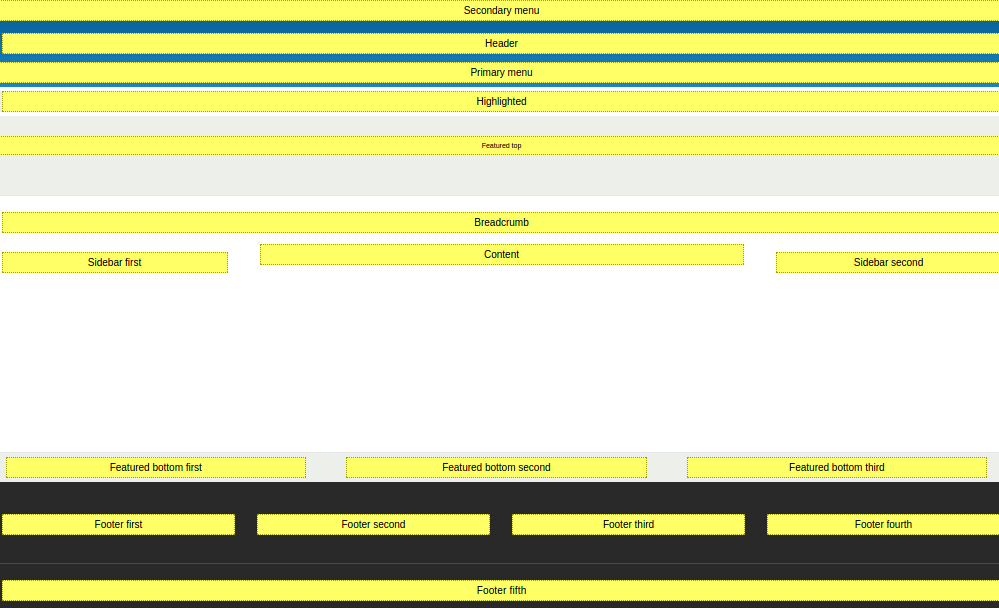
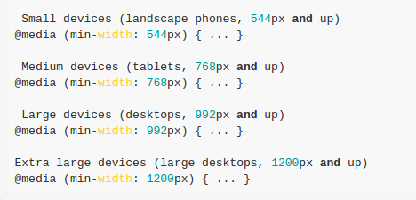

Mejoras de Drupal 8 - Front-End
Drupal 8 - Temas del Core
Drupal 8 - Estructura
Drupal 8 - Regiones

Drupal 8 - Crear un Tema
MY_THEME.info.yml
name: Drupal Mini Camp
type: theme
description: Drupal Mini Camp Theme Presentation
package: Other
core: 8.x
base theme: false
Drupal 8 - Instalación
Twig Templates
Drupal 8 - SUBTEMA


Drupal 8 - Compilar SASS & LESS
Herramientas:


Drupal 8 - Theme Responsive

Drupal 8 - Breakpoints

Drupal 8 - Documentación